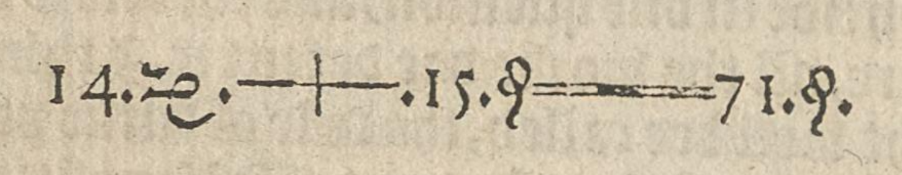

3.2 Solving Multi-Step Equations by Inverse Operations
Introduction
In the previous section we discussed inverse operations and how to perform an operation on both sides of an equation in order to solve it.
All of the examples in that section had a single operation, so it was fairly straightforward to know which inverse operation to use. Now, however, we will encounter equations with multiple operations. When solving these types of equations not only will we need to find the inverse operations, but we will have to deploy them in the proper order.
In this section, we will delve into the process of solving multi-step equations using inverse operations.
Identifying the Order of Operations
Before we discuss the theory behind solving multi-step equations, we need to make sure we know the correct order of operations. This was covered in detail in the previous chapter (see section 2.2), but here's a quick review:
- Perform any operations within groupings. Groupings are typically shown within parentheses or brackets. Less commonly, groupings will involve an operation in an exponent or in the numerator (top) or denominator (bottom) of a fraction.
- Apply any exponents.
- Apply any multiplication or division operations from left to right.
- Apply any addition or subtraction operations from left to right.
Not only is it important to be able to perform operations in the correct order, it's also important to be able to identify the operations that are taking place in an equation, in the correct order. To do this, focus on what is happening to the variable.
What's the order of operations for the variable \(x\) in the expression \(5x - 48\).
Solution
Since multiplication happens before subtraction, the order of operations is :
- Multiply by \(5\)
- Subtract \(48\)
Identify the correct order of operations for the variable \(n\) in the expression \(\dfrac{3n+2}{7}\).
Solution
The fraction bar acts as a grouping symbol, so the correct order of operations is:
- Multiply by \(3\)
- Add \(2\)
- Divide by \(7\)
List the proper order of operations for the variable \(p\) in \((p-16)^2 + 9\).
Solution
Since operations in parentheses should be done first, the proper order is:
- Subtract \(16\)
- Exponent of \(2\)
- Add \(9\)
Solving Multi-Step Equations
As the name implies, a multi-step equation requires that we perform multiple operations in order to find the solution. We discussed inverse operations in the previous section. Now, it's time to learn about inverse processes.
It will help if we start with something everyone is familiar with: putting on socks and shoes.
When getting dressed, socks must be put on before shoes. But what do you do when getting undressed? The inverse process is to remove shoes first and then socks.
Notice that this process requires undoing each step in the reverse order. Shoes were the last things to be put on, for instance, but they are the first things that must be taken off.
| \(\big\downarrow\) | Actions | Inverse Actions | \(\big\uparrow\) |
|---|---|---|---|
| Put on Socks | Take off Socks | ||
| Put on Shoes | Take off Shoes | ||
| \(\longrightarrow\) | |||
This illustrates the notion of an inverse process: In order to undo a multi-step process, the steps must be undone in the reverse order of how they were originally done.
This is exactly how we will solve multi-step equations. Once we have identified the operations taking place and the order in which they occur, we will apply the inverse operations in the reverse order.
There's no better place to start than with the first equation ever printed. It comes from Robert Recorde's The Whetstone of Witte (1557), on the very same page where he introduced the equal sign.
He wrote it a bit fancier than we do today, but the equation is \(14x+15=71\). Let's solve it!
Use inverse operations to solve \(14x+15=71\) for \(x\).
Solution
The operations happening to \(x\) are
- Multiply by \(14\)
- Add \(15\)
So in order to solve for \(x\) we should
- Subtract \(15\)
- Divide by \(14\)
Remembering to do those operations on both sides, we get the following:
\begin{align} 14x+15 &= 71 && \hint{\text{Original equation}} \\ 14x +15 - 15 &= 71 - 15 && \hint{\text{Subtract }15 } \\ 14x &= 56 && \hint{\text{Simplify}} \\ \frac{14x}{14} &= \frac{56}{14} && \hint{\text{Divide by }14} \\ x &= 4 && \hint{\text{Simplify}} \\ \end{align}And just like that we've solved the first equation ever printed!
In the following examples we will solve equations involving the three expressions we analyzed in Examples 1-3.
Use inverse operations to solve \(5x - 48 = -23\) for \(x\).
Solution
We analyzed the operations of \(5x - 48 \) in Example 1. All that remains is to do the opposite operations in the reverse order.
\begin{align} 5x - 48 &= -23 && \hint{\text{Original equation}} \\ 5x -48 + 48 &= -23 + 48 && \hint{\text{Add } 48} \\ 5x &= 25 && \hint{\text{Simplify}} \\ \frac{5x}{5} &= \frac{25}{5} && \hint{\text{Divide by }5} \\ x &= 5 && \hint{\text{Simplify}} \\ \end{align}Use inverse operations to solve \(\dfrac{3n+2}{7} = 5\)
Solution
We analyzed the operations of \(\dfrac{3n+2}{7}\) in Example 2. All that remains is to do the opposite operations in the reverse order.
\begin{align} \frac{3n+2}{7} &= 5 && \hint{\text{Original equation}} \\ 7\cdot\frac{3n+2}{7} &= 7\cdot5 && \hint{\text{Multiply by }7} \\ 3n+2 &= 35 && \hint{\text{Simplify}} \\ 3n+2-2 &= 35-2 && \hint{\text{Subtract }2} \\ 3n &= 33 && \hint{\text{Simplify}} \\ \frac{3n}{3} &= \frac{33}{3} && \hint{\text{Divide by }3} \\ n &= 11 && \hint{\text{Simplify}} \end{align}Use inverse operations to solve \((p-16)^2 + 9 = 73\)
Solution
We analyzed the operations of \((p-16)^2 + 9\) in Example 3. All that remains is to do the opposite operations in the reverse order.
\begin{align} (p-16)^2 + 9 &= 73 && \hint{\text{Original equation}} \\ (p-16)^2 + 9-9 &= 73-9 && \hint{\text{Subtract }9} \\ (p-16)^2 &= 64 && \hint{\text{Simplify}} \\ \sqrt{(p-16)^2} &= \pm \sqrt{64} && \hint{\text{Square root}} \\ p-16 &= \pm 8 && \hint{\text{Simplify}} \\ p-16+16 &= \pm 8 + 16 && \hint{\text{Add }16} \\ \\ p &= 8 + 16 = 24 && \hint{\text{Calculate both solutions}} \\ &\text{ and } \\ p &= -8 + 16 = 8 \end{align}Note that at the end of the solving process in Example 7 we had two equations to solve. We did not simply find one value and say the answer was \(\pm\) of that number. We had to evaluate both \(8+16\) and \(-8+16\).
In our final example we'll look at an equation that comes from a realistic scenario.
Suppose the cost to hire a plumber involves a \(\$65\) call-out fee on top of a labor charge of \(\$85\) per hour. Let's say that \(c\) represents the total cost to hire a plumber. Then the equation for the total cost would be \(c=85h+65\) for \(h\) hours. If you receive an invoice for \($660\), how many hours did the plumber put on the bill?
Solution
To find the answer we need to solve the equation when \(c=660\).
\begin{align*} 660 &= 85h + 65 && \hint{\text{Starting equation}} \\ 595 &= 85h && \hint{\text{Subtract } 65} \\ \frac{595}{85} &= \frac{85h}{85} && \hint{\text{Divide by } 85} \\ h &= 7 && \hint{\text{Simplify}} \\ \end{align*}Let's check our answer.
\begin{align*} c &= 85h + 65 && \hint{\text{Starting equation}} \\ &= 85 \cdot 7 + 65 && \hint{\text{Substitute }h=7} \\ &= 595 + 65 \\ &= 660 \end{align*}We can now say that the plumber must have billed \(7\) hours of labor if the total cost was $660.
Conclusion
It is important to note that using inverse processes to solve multi-step equations is a good approach to use if the variable only occurs once in the equation. In more complicated equations, such as \(x^2 + 7x - 12 = 6\), where the variable appears more than once, we'll have to use other strategies. Those techniques will be explored in detail in Chapter 4.